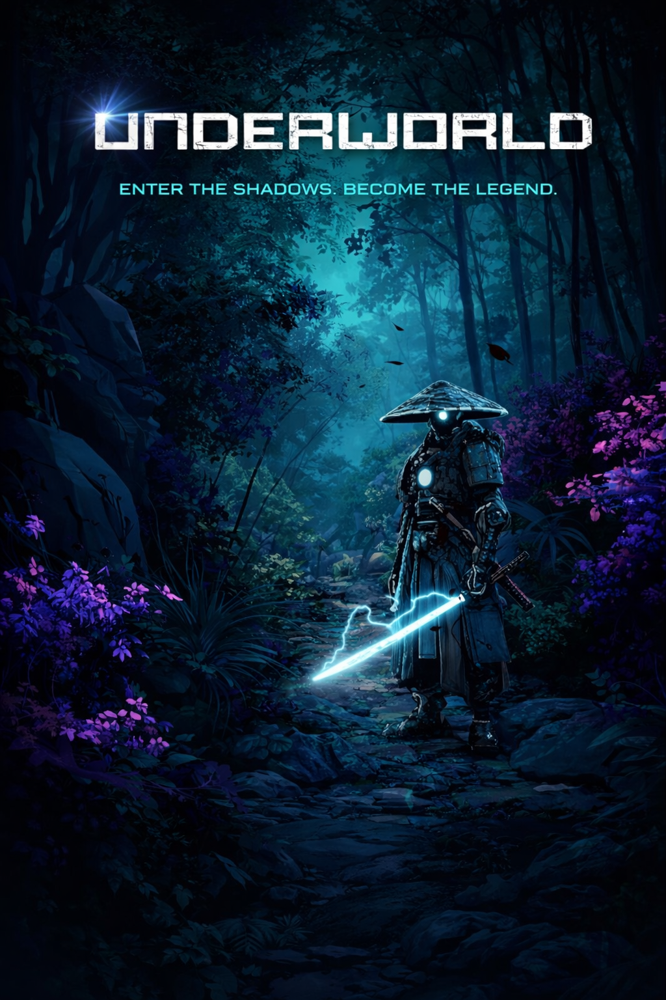
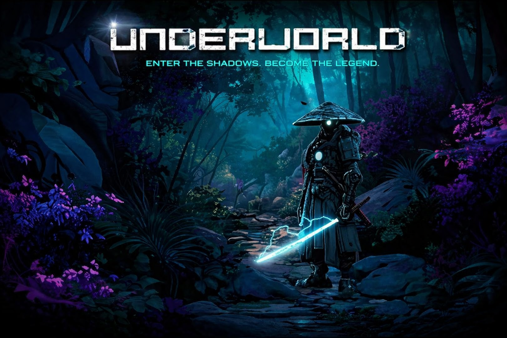
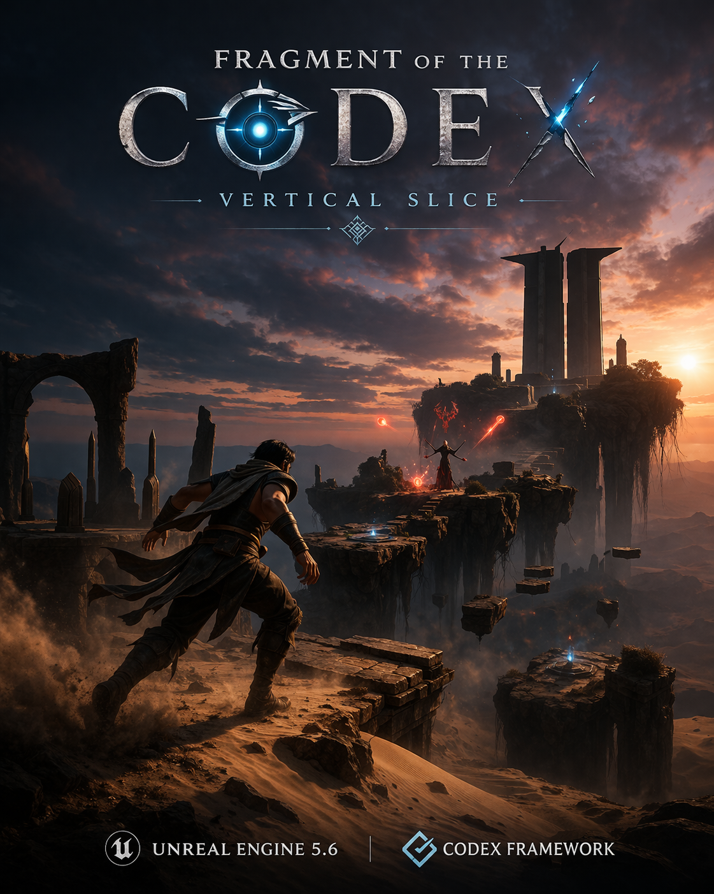

Unity · Released Game
Underworld
A released platformer developed under Nitrous Studio, showcasing completed production, game feel, collaborative development, and a tangible shipped result.
Gameplay Programming · Physics · Rendering · Systems
I’m a developer with a background in physics and computer science, focused on gameplay systems, technical prototyping, simulation, and real-time graphics. My portfolio combines released game work, ambitious vertical slice development, numerical simulation, and AI/pathfinding systems.

A completed game project focused on gameplay feel, level progression, and execution.
Featured Work

A released platformer developed under Nitrous Studio, showcasing completed production, game feel, collaborative development, and a tangible shipped result.

A UE5 vertical slice built on the CodeX combat orchestration framework, combining traversal, combat, cinematic structure, and boss-driven flow.
A fluid simulation project exploring particle-based methods, physical modeling, visualization, and comparison with Eulerian approaches.
A strategy prototype focused on movement conflict resolution, pathfinding, and algorithmic thinking for large coordinated groups.
Exploration
Browser rendering experiments with materials, lighting, and ray intersections.
Interactive visualization of nonlinear dynamics and mathematically rich systems.
Shader-based deformation of spheres, toroids, and other procedural surfaces.
Realtime VFX and tech-art exploration inside Unreal Engine.
Technical Writing
Notes on building reusable gameplay architecture for a vertical slice without hard dependencies.
Tradeoffs between SPH and Eulerian formulations from an implementation and visualization perspective.
Early design notes on dense pathfinding, occupancy pressure, and coordination logic.